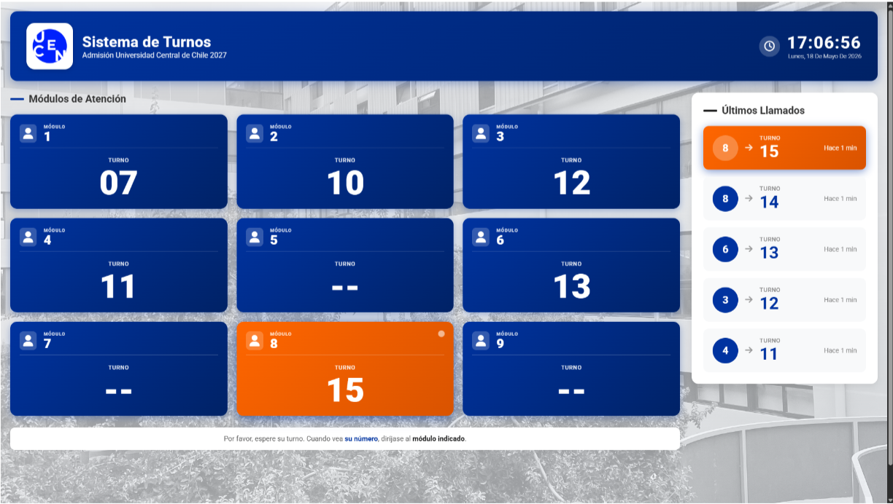

Nombre del Proyecto
Descripción breve del proyecto trabajado.
Laboratorio 1 — Sitio web colaborativo con Git y GitHub
Descripción breve del proyecto trabajado.
Lens Sentinel AI es un software de escritorio diseñado para optimizar la detección y validación de lentes gravitacionales (anillos de Einstein) en grandes volúmenes de datos astronómicos.

Se realizó un sistema actualizado de turnos para la Universidad Central Sede Coquimbo acorde a los requerimientos e insumos de la institución para procesos de Admisión y Matrículas.